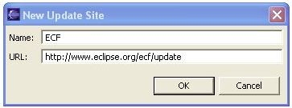

There are several different ways that you can download and install ECF.
See the Downloads below for details about ECF installation.
 Eclipse Communications Framework 0.4.0 "Stable" build is now available. New and Noteworthy for 0.4.0
Eclipse Communications Framework 0.4.0 "Stable" build is now available. New and Noteworthy for 0.4.0
|
|
System Requirements
|
|
ECF plugins will be built in Java and will be portable to any platform supported
by Eclipse. For components that might not run on Eclipse (e.g. servers), all
ECF-created code will be built to depend only upon pure Java Standard Edition
(1.4). We also will look to support OSGI Foundation as a minimum runtime platform.
You will need the following already installed on your machine:
|
|
ECF Downloads |
|
Option 1 - ECF Update Site
Option 2a - ECF SDK The zip below contains all ECF core plugins and example applications. First-time users can get started quickly by simply downloading and installing this zip:
- Download
- Unzip into your Eclipse installation directory (e.g. C:\eclipse)
- Launch Eclipse (you may need to use the -clean command line switch
or delete your configuration directory)
- Problems? Check the FAQ entries.
- Major features/changes in ECF SDK 0.4.0.S20050904 "Stable" Build Date 2005-09-10, from previous builds:
TBD
- Major features/changes in ECF SDK 0.3.3.I20050710 Build Date 2005-07-10, from previous builds:
Plugin: org.eclipse.ecf
- Removed static methods in SharedObjectContainerFactory and replaced with instance methods. Added getDefault() static method to get singleton instance.
For example, calls previously made like this:
ISharedObjectContainer container = SharedObjectContainerFactory.makeSharedObjectContainer();
are now made like this:
ISharedObjectContainer container = SharedObjectContainerFactory.getDefault().makeSharedObjectContainer();
- Removed static methods in IDFactory and replaced with instance methods similar to SharedObjectContainerFactory.
Calls previously made: ID newID = IDFactory.makeID();
Are now to be made: ID newID = IDFactory.getDefault().makeID();
- Simplified ISharedObjectContext.addSharedObject() and ISharedObjectContext.createSharedObject(). Specifically, the last parameter of both of these methods (ISharedObjectContainerTransaction) is now gone from these calls. This makes their signature simpler and the API generally easier to use.
Non-compatibility breaking API changes. Package: org.eclipse.ecf.core.
- As per discussion in ECF newsgroup with John Patterson, added IContainer super interface for ISharedObjectContainer. Now allows clients that wish to have simpler interface to work with to use following:
IContainer container = SharedObjectContainerFactory.getDefault().makeSharedObjectContainer();
// use container instance as desired
- IContainer now extends/depends upon 'org.eclipse.core.runtime.IAdaptable', as per discussion with John Patterson and Li Te Cheng in newsgroup.
- Added ISharedObjectContainerFactory interface describing container factory access. SharedObjectContainerFactory.getDefault() returns singleton instance of ISharedObjectContainerFactory
- Added IIDFactory interface describing id factory access. IDFactory.getDefault() returns singleton instance of IIDFactory.
Package: org.eclipse.ecf.core.events
- Added ISharedObjectCommitEvent interface and implementation class SharedObjectCommitEvent implementation class to support reliable replication of shared objects within a given container context.
Plugin: org.eclipse.ecf.provider
- Added much more tracing to the connection handling in the generic server implementation. With tracing turned on (for 'connection' trace name) all detected exceptions are reported, as are keepalive send and receive.
- Bug fixes and reliability improvements for the generic server implementation. Went over server connection handling code carefully and fixed several small bugs that could be the source of some unreliability (i.e. unexpected server disconnects) in the generic server implementation.
New Package: org.eclipse.ecf.provider.sobject
- Added provisional API for reliably replicating shared object instances upon add to a container. Clients can now add a shared object to a container transactionally, using a simple two-phase-commit protocol, so that adding the shared object will be completed with 'all-or-nothing' semantics. NOTE: once testing is complete, this API may soon move to another package, perhaps in the org.eclipse.ecf core plugin.
Plugin: org.eclipse.ecf.ui
- Many small improvments to the DiscoveryView...the ECF Service Discovery view
Plugin: org.eclipse.ecf.example.collab
- Added automatic creation of 'generic server' on localhost. Now, if preference is set (in ECF Collaboration preference page), an ECF generic server will be created on port 3282 on localhost (with group name 'server'). Clients on LAN can connect to group via URL: http://:3282/server.
- Added automatic zeroconf publishing of 'generic server' on local lan. Now, if preference is set (in ECF Collaboration preference page), the ECF generic server created in 1 will be pulished via zeroconf discovery protocol to the local LAN. Other clients running ECF Service Discovery will automatically discover the user's server and through the ECF Service Discovery view can examine the attributes of the published service and/or connect directly to the service (see context menu for discovered services).
Note: This will only function of the user has the JmDNS provider, which will soon (~8/1/05) be available via eclipse.org, but due to ongoing due dilligence it currently cannot yet be made available at eclipse.org. Please send email to slewis@composent.com to get access to the JmDNS provider ECF plugin if interested in getting ahold of using plugin immediately.
New Plugin: org.eclipse.ecf.test.harness
- Added test harness to allow multiple test clients to be automatically created, joined with remotes (via joinGroup), and closed (via leaveGroup).
Option 2b - ECF Individual Plugins Below are listed the various individual ECF features. These features can be downloaded and installed separately. If you wish to have/install all the ECF features, see Option 2a above.
- Core
- ECF Generic Collaboration Server
- ECF Protocol Providers
- Example Applications
- Real-time Collaboration Features
- Tests
- All Tests
- Use org.eclipse.ecf.test class available via CVS at Option 3 - ECF from CVS
Option 3 - ECF from CVS
- Create a new workspace (recommended).
- Define a new Java Classpath Variable named JAVA_HOME that points to
your JDK 1.4.x installation (e.g. C:\jdk1.4.2).
- Import the ECF team project set for anonymous access:
http://www.eclipse.org/ecf/org.eclipse.ecf.docs/ecf-anonymous.psf
or ECF team project set for committer's access:
http://www.eclipse.org/ecf/org.eclipse.ecf.docs/ecf-comitter.psf
(when using anonymous access, enter "anonymous" as the
username, leave the password field empty, and check "save password").
- Launch either or both of the following run configs: ECF Example
Collab Client 1 or ECF Example Collab Client 2 with either the
Eclipse Run->Run... or Run->Debug... config dialogs.
|
|
|
ECF JAR (Java Archive) Files via Eclipse Update Manager |
|
The following Eclipse Communications Framework JAR files are available via the Eclipse Update Manager:
| File |
Build Date |
| org.eclipse.ecf.collab - 0.4.0 |
2005-09-04 |
| org.eclipse.ecf.core - 0.4.0 |
2005-09-04 |
| org.eclipse.ecf.datashare - 0.4.0 |
2005-09-04 |
| org.eclipse.ecf.graphshare - 0.4.0 |
2005-09-04 |
| org.eclipse.ecf.server - 0.4.0 |
2005-09-04 |
| org.eclipse.ecf.xmpp - 0.4.0 |
2005-09-04 |
|
Directions to configure Eclipse for ECF JAR file updates
|
In Eclipse, go to Help menu > Help Contents > Workbook User Guide
|
- In the Workbook User Guide, navigate to:
- Tasks
- Updating features with the update manager
- Installing new features with the update manager
- In Installing new features with the update manager, follow steps 1 through 13
- In step #4, in the New Update Site dialog:
- For "CompanyA" enter: ECF updates
- For the URL enter: http://download.eclipse.org/technology/ecf/update
As shown in this dialog:

|
|
Connecting an ECF Collaboration Client to a Test Server |
-
Make sure ECF plugins are installed in one of three ways described above.
-
Open the Navigator View or the Package Explorer View.
-
Select any Project (first create some new project if none previously exists).
-
Right-click on the project to bring up the context menu for the selected project.
-
Select the ECF menu toward the bottom of the menu and select one of:
-
'Join Collaboration...' This will allow you to specify an URL of the group to join.
You must know of a currently running server (and know it's URL) to use this option.
-
'Join Test Collaboration (Localhost)' This will connect you directly to a test
server running on localhost. See below for instructions for Running a Collaboration
Server on Localhost if you wish to run this way.
-
'Join Test Collaboration (Composent)' This will connect you directly to a test server running
on composent.com. This is a test server setup for the ECF team usage. You are welcome
to try out connecting to this server to test out/use the ECF example client. The server's
availability may not be consistent, however.
|
|
Running a Collaboration Server on Localhost |
-
Download ECF projects from CVS as described above.
-
Choose Run... or Debug... from the Eclipse Run Menu.
-
Under 'Java Application' choose 'ECF Collab Server'.
-
Choose 'Run' (or Debug).
-
This will run a simple server on your localhost machine with the ECF URL:
ecftcp://localhost:3282/server. You can then connect to this server with
an Eclipse client as described in Connecting an ECF Collaboration Client
to an Existing Server above.
|
|
Running the ECF Generic Collaboration Server Using the Server Feature |
-
Download ECF Generic Collaboration Server
-
Unzip contents to desired install location <installdir>.
-
Modify the config file appropriately located in <installdir>/features/org.eclipse.ecf.serverfeature_0.2.0/conf/server.xml
-
Here is an example server.xml:
<server>
<connector hostname="localhost" port="3282">
<group name="server"/>
</connector>
</server>
This example configures a server that listens on port 3282, with hostname "localhost", and supporting a single group named "server".
This corresponds to the following client URL: ecftcp://localhost:3282/server.
Note that if the hostname attribute is omitted, the hostname will default to the fully qualified
domain name of the given machine (e.g. www.eclipse.org).
Note also that there can be as many groups as
desired defined within a given port/connector,
and each group will define a unique url. For example for group name="server1", or group name="server2",
the URLS would be: ecftcp://localhost:3282/server1, ecftcp://localhost:3282/server2, respectively.
-
Start the server by changing directory to <installdir>/features/org.eclipse.ecf.serverfeature_0.2.0/bin and
running either startserver.sh or startserver.cmd/bat as appropriate to your OS.
|